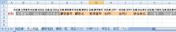

第28回.納品書データをデータベース化(1)
エクセルで顧客管理を作ろう、
さーて、プログラム作成を進めます、
シート「納品書」で入力した内容を、データベース化します。
シート「納品書」に名前定義を追加します。
もう既に、多くの名前定義をしましたので、何が何やらわからなくなってしまっています。
名前定義の画面（Ctrl+F3）で、１つづつ確認していたのでは、日が暮れる、いや夜が明ける。
そこで、名前定義の一覧をマクロで取得してみます。
どこの標準モジュールでも良いのですが、新規に「Modツール」を作成しました。
Sub 名前定義取得_全て()
Dim nm As Name
Worksheets.Add
For
Each nm In ActiveWorkbook.Names
Cells(nm.Index, 1) =
nm.Name
Cells(nm.Index, 2) = Mid(nm.Value, 2)
Next
End
Sub
このマクロを実行すると、新規ｼｰﾄが作られ、
A列に名前定義の名前、B列に参照範囲が出力されます。
Worksheets.Addは、シートを新規に追加します、場所はどこでもよいので省略しています。
追加場所を指定する場合は、Before:=やAfter:=に続けて、シートを指定します。
For Each nm In ActiveWorkbook.Names
は、ブックに定義されている、名前定義を１つづつ取り出します。
nm.Indexは、定義のインデックスです、まあ、順番です。
nm.Nameは、名前です。
nm.Valueは、参照範囲です。
Mid(nm.Valueは、参照範囲の先頭の「=」を取り除いています。
このように、Midは、第3引数を省略すると、最後までになります。
| 名前 | 参照範囲 |
| 納品書_金額 | 納品書!$K$20:$K$30 |
| 納品書_顧客番号 | 納品書!$B$11 |
| 納品書_顧客名 | 納品書!$B$7 |
| 納品書_行番号 | 納品書!$B$20:$B$30 |
| 納品書_自社担当 | 納品書!$L$4 |
| 納品書_住所１ | 納品書!$B$5 |
| 納品書_住所２ | 納品書!$B$6 |
| 納品書_商品番号 | 納品書!$C$20:$C$30 |
| 納品書_商品名 | 納品書!$D$20:$G$30 |
| 納品書_数量 | 納品書!$H$20:$H$30 |
| 納品書_単位 | 納品書!$I$20:$I$30 |
| 納品書_単価 | 納品書!$J$20:$J$30 |
| 納品書_担当者名 | 納品書!$B$9 |
| 納品書_伝票番号 | 納品書!$K$4 |
| 納品書_納品日 | 納品書!$L$2 |
| 納品書_備考 | 納品書!$L$20:$M$30 |
| 納品書_郵便番号 | 納品書!$B$4 |
太字が今回追加した名前定義です。
前回までに、名前定義していなかった項目を追加しました。
これで、「納品書」の入力項目全てが名前定義されました。
続いて、シート「売上明細」を作成します。
納品書なので、納品書明細かもしれませんが・・・この方が呼びやすいので。（笑）
まあ、名前は何でも、普段使っている名前で良いでしょう。

削除、伝票番号、納品日、自社担当、顧客番号、顧客名、郵便番号、住所１、住所２、担当者名
行番号、商品番号、商品名、数量、単位、単価、金額、備考
と入力します。
B2には、それぞれ該当する、「納品書」の名前定義を入れます。
手入力では大変なので、マクロで入れます。
新規に作成した、「Modツール」に以下を追加し、実行します。
Sub 名前定義取得_納品書()
Dim nm As Name
Dim strName As
String
Dim rng As Range
With Worksheets("売上明細")
For Each nm In
ActiveWorkbook.Names
If Left(nm.Name, 4) = "納品書_"
Then
strName = Mid(nm.Name, 5)
Set rng = .Range("B3",
Cells(3, .Cells.SpecialCells(xlLastCell).Column)).Find(strName)
If
Not rng Is Nothing Then
rng.Offset(-1, 0) = nm.Name
End
If
End If
Next
End With
End
Sub
2行目に、該当する名前定義が入力されます。
内容は、先のモジュールとほぼ同様です。
名前定義の「納品書_○△□」より、 ○△□を取り出し、
3行目に入力した項目と一致する列に、名前定義を入れています。
このシート「売上明細」の作成は、ソフトの要にもなりますので、
項目名を便りに、データを作成したのでは、ちょっと危険な気がします。
しかし、列の入替・追加・削除に対応する為、名前定義を指定するようにしました。
方法はいろいろありますが、今回のソフトでは、名前定義をキーとして処理している部分が多いので、
ここでも、名前定義をキーに、データ保存列を決定するようにしてみました。
プログラムが複雑にならず、しかし、融通が利く事を考えた、妥協の産物です。（笑）
ソフト作成では、ほんのちょっとした仕様の違いで、プログラムの難易度が格段に違ってくるものです。
譲れない仕様もあるでしょうが、ちょっと柔軟に考えただけで、開発工数を半減できます。
頑なに当初の仕様にこだわるのは、TCOの増大を招きます。
なんか、もっともらしい事を書きましたが、これなら、プログラムが書きやすそうだったので
今まで付けた名前定義も、命名方法がバラバラなので、この際統一します。
| 変更前 | 変更後 |
| 設定シート名 | シート名_設定 |
| 顧客登録シート名 | シート名_顧客登録 |
| 顧客一覧シート名 | シート名_顧客一覧 |
| 項目名シート名 | シート名_項目名 |
| 納品書シート名 | シート名_納品書 |
| 商品マスタシート名 | シート名_商品マスタ |
| 分類マスタシート名 | シート名_分類マスタ |
| 売上明細シート名 | シート名_売上明細 |
| 顧客一覧開始 | 顧客一覧_開始 |
| 顧客番号 | 顧客一覧_顧客番号 |
| 顧客登録開始 | 顧客登録_開始 |
| 商品マスタ開始 | 商品マスタ_開始 |
| 商品番号 | 商品マスタ_商品番号 |
| 大分類 | 分類マスタ_大分類 |
| 中分類 | 分類マスタ_中分類 |
| 顧客区分 | 項目名_顧客区分 |
| 単位 | 項目名_単位 |
命名規則としては、先頭に、「シート名_」を付けるようにします。
名前定義を変更する方法
手動で変更する場合は、直接修正せずに、名前定義を削除（）Ctrl+F3）、または当該セルを削除し、
新規に名前定義をするようにします。
直接修正すると、元の名前定義が残ってしまいます。
なるべくマクロで行って下さい。
Sub 名前定義変更()
Dim nm As Name
For Each nm In
ActiveWorkbook.Names
Select Case nm.Name
Case
"変更前1"
nm.Name = "変更後1"
Select Case nm.Name
Case "変更前2"
nm.Name = "変更後2"
・・・
End Select
Next
End Sub
上は、サンプルです。
変更前、変更後に、正しい名前を指定して下さい。
作成途中でも、このような変更は重要です。
今後の開発をスムーズに進める為には、改められる事は、積極的に改めて行きます。
名前定義の変更に伴い、VBA中のリテラル（"名前定義"）の名前定義は、全て修正します。
これで準備は整いました。
シート「納品書」の入力データを、シート「売上明細」へ入れ、データベース化します。
この記事を書いている時点では、まだ、先のプログラムは出来ていません。
さてさて、無事にプログラミングできるのでしょうか。
この「売上明細」の作成、そして、これを集計するあたりが、このソフトの最大の山場になります。
いわば、私の腕の見せ所・・・大丈夫でしょうか
まあ、大丈夫です、この程度なら、かわいいもんです。
ただ、ブログで紹介するので、あまりにの力技では、説明が困難になります。
ここが最大の問題です。
いかに、スマートで可読性の良いプログラムにするか・・・ここが最大の課題です。
今回は、名前定義を大幅に変更しましたので、
ここまでの、エクセルのサンブル をアップしました。
では、次号をお楽しみに。
これから、頑張って、プログラムを作りまーす。
同じテーマ「エクセル顧客管理」の記事
第25回.納品書を作成、商品情報を取得(3)
第26回.WorksheetFunctionについて
第27回.RangeとCellsの深遠
第28回.納品書データをデータベース化(1)
第29回.納品書データをデータベース化(2)
第30回.配列の使い方について
第31回.売上一覧（伝票合計の一覧）を作成(1)
第32回.売上一覧（伝票合計の一覧）を作成(2)
第33回.売上一覧より納品書を作成
第34回.伝票番号の自動採番機能を追加
第35回.メニューを作成
新着記事NEW ・・・新着記事一覧を見る
VBA100本ノック 100本目：WEBから100本ノックのリストを取得｜VBA練習問題（3月3日）
VBA100本ノック 99本目：自動席替え（行列と前後左右が全て違うように）｜VBA練習問題（3月2日）
VBA100本ノック 98本目：席替えルールが守られているか確認｜VBA練習問題（3月1日）
VBA100本ノック 97本目：Accessデータを取得（グループ集計）｜VBA練習問題（2月27日）
VBA100本ノック 96本目：Accessデータを取得（マスタ結合&抽出）｜VBA練習問題（2月26日）
VBA100本ノック 95本目：図形のテキストを検索するフォーム作成｜VBA練習問題（2月24日）
VBA100本ノック 94本目：表範囲からHTMLのtableタグを作成｜VBA練習問題（2月23日）
VBA100本ノック 93本目：複数ブックを連結して再分割｜VBA練習問題（2月22日）
VBA100本ノック 92本目：セルの色を16進で返す関数｜VBA練習問題（2月20日）
VBA100本ノック 91本目：時間計算（残業時間の月間合計）｜VBA練習問題（2月19日）
アクセスランキング ・・・ ランキング一覧を見る
1.最終行の取得（End,Rows.Count）｜VBA入門
2.RangeとCellsの使い方｜VBA入門
3.変数宣言のDimとデータ型｜VBA入門
4.マクロって何？VBAって何？｜VBA入門
5.Range以外の指定方法（Cells,Rows,Columns）｜VBA入門
6.セルのコピー&値の貼り付け（PasteSpecial）｜VBA入門
7.繰り返し処理（For Next)｜VBA入門
8.セルに文字を入れるとは（Range,Value）｜VBA入門
9.マクロはどこに書くの（VBEの起動）｜VBA入門
10.とにかく書いてみよう（Sub,End Sub）｜VBA入門
このサイトがお役に立ちましたら「シェア」「Bookmark」をお願いいたします。
記述には細心の注意をしたつもりですが、
間違いやご指摘がありましたら、「お問い合わせ」からお知らせいただけると幸いです。
掲載のVBAコードは動作を保証するものではなく、あくまでVBA学習のサンプルとして掲載しています。
掲載のVBAコードは自己責任でご使用ください。万一データ破損等の損害が発生しても責任は負いません。